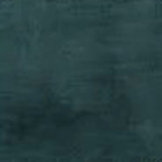
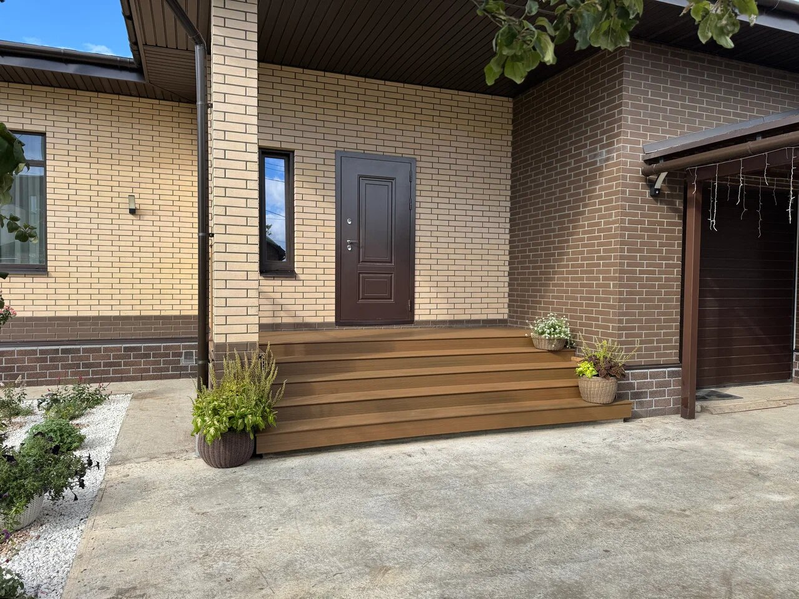
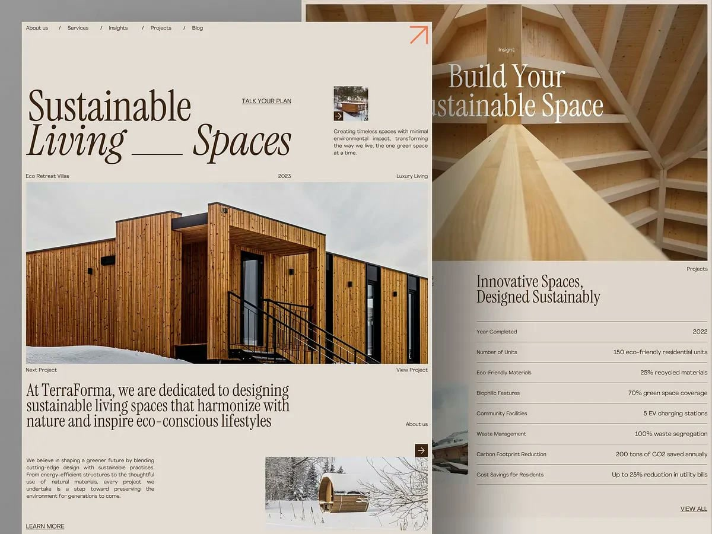

<title>Стиль GRÜNDECK</title>
<meta name="claude:viewport-fit-sides" content="cover">
<style>
/*FONTFACE*/
/* Layout: цвет и шрифт GRÜNDECK — нейтральный лист, двухтоновые заголовки, колонка-подпись слева и образцы справа; тёплое только в фото дерева. Один светлый вид намеренно. */
:root {
  --leaf: #FFFFFF;
  --milk: #F5F5F4;
  --stone: #EBEBEA;
  --fog: #D9D9D8;
  --grey: #8C8C8B;
  --graphite: #3A3A3A;
  --ink: #121212;
  --r-lg: clamp(18px, 1.8vw, 26px);
  --r-md: clamp(12px, 1.1vw, 16px);
  --pad: clamp(18px, 2.2vw, 40px);
  --ease: cubic-bezier(.22, 1, .36, 1);
  --font: "Medeo Sans", "Helvetica Neue", Arial, sans-serif;
  /* Шкала: телефон 375 → десктоп 1440 */
  --h1: clamp(2.75rem, 1.607rem + 4.88vw, 6rem);
  --h2: clamp(2.125rem, 1.465rem + 2.817vw, 4rem);
  --h3: clamp(1.625rem, 1.317rem + 1.315vw, 2.5rem);
  --h4: clamp(1.25rem, 1.074rem + 0.751vw, 1.75rem);
  --tm: clamp(1.125rem, 1.081rem + 0.188vw, 1.25rem);
  --ts: 1rem;
  --num: clamp(2.25rem, 1.986rem + 1.127vw, 3rem);
  color-scheme: light;
}
* { box-sizing: border-box; }
/* Корень 16 px: шкала точная на 1440, потолок растёт только на больших экранах */
html { font-size: 100%; scroll-behavior: smooth; }
@media (min-width: 1921px) { html { font-size: 112.5%; } }
body { background: var(--leaf); color: var(--ink); font-family: var(--font); font-optical-sizing: auto; font-size: var(--ts); line-height: 1.5; letter-spacing: -.01em; }
.page { max-width: 2400px; margin: 0 auto; padding-left: max(clamp(1rem, 0.4rem + 3.6vw, 5rem), env(safe-area-inset-left, 0px)); padding-right: max(clamp(1rem, 0.4rem + 3.6vw, 5rem), env(safe-area-inset-right, 0px)); }
h1, h2, h3, h4 { margin: 0; font-weight: 500; text-wrap: balance; }
h1 span, h2 span, h3 span { color: var(--grey); font-weight: 400; }
p { margin: 0; max-width: 60ch; }
.cap { font-size: 0.8125rem; font-weight: 500; color: var(--grey); }

/* Шапка */
body::before { content: ""; position: fixed; inset: 0 0 auto; height: env(safe-area-inset-top, 0px); z-index: 21; background: var(--leaf); }
.top { position: sticky; top: env(safe-area-inset-top, 0px); z-index: 20; background: rgba(255,255,255,.88); backdrop-filter: blur(12px); -webkit-backdrop-filter: blur(12px); border-bottom: 1px solid var(--stone); }
.top-in { display: flex; align-items: center; justify-content: space-between; gap: 16px; padding-block: 14px; }
.logo { display: grid; gap: 2px; line-height: 1; }
.logo b { font-weight: 600; letter-spacing: -.04em; font-size: 1.05rem; }
.logo span { font-size: 0.6875rem; color: var(--grey); }
.nav { display: flex; gap: 22px; font-size: 0.8125rem; }
.nav a { color: var(--grey); text-decoration: none; transition: color .2s ease; }
.nav a:hover, .nav a:focus-visible { color: var(--ink); }

/* Первый экран */
.hero { padding-block: clamp(48px, 7vw, 130px) clamp(32px, 4vw, 64px); display: grid; gap: clamp(20px, 2vw, 32px); justify-items: center; text-align: center; }
.hero h1 { font-size: var(--h1); line-height: .92; letter-spacing: -.05em; max-width: 13ch; }
.facts { display: grid; grid-template-columns: repeat(3, minmax(0, 1fr)); gap: 12px; width: min(100%, 820px); text-align: left; margin-top: 8px; }
.facts > div { border-top: 1px solid var(--ink); padding-top: 10px; display: grid; gap: 4px; }
.facts b { font-weight: 500; font-size: var(--h4); letter-spacing: -.03em; line-height: 1.15; }
.strip { display: grid; grid-template-columns: repeat(4, minmax(0, 1fr)); gap: clamp(8px, 1vw, 16px); padding-bottom: clamp(48px, 6vw, 110px); }
.strip figure { margin: 0; display: grid; gap: 8px; }
.strip .ph { overflow: hidden; border-radius: var(--r-md); }
.strip img { width: 100%; height: auto; aspect-ratio: 3 / 4; object-fit: cover; display: block; transition: transform 1.2s var(--ease); }
.strip figure:hover img { transform: scale(1.05); }
.strip figure:nth-child(even) { transform: translateY(clamp(12px, 2vw, 36px)); }

/* Секции */
.sec { padding-block: clamp(56px, 6vw, 130px); border-top: 1px solid var(--stone); display: grid; gap: clamp(28px, 3vw, 56px); scroll-margin-top: 60px; }
.sec-head { display: grid; grid-template-columns: minmax(0, 1.5fr) minmax(0, 1fr); gap: clamp(16px, 3vw, 60px); align-items: end; }
.sec-head h2 { font-size: var(--h2); line-height: .96; letter-spacing: -.04em; }
.sec-head p { color: var(--grey); font-size: var(--ts); }
.sec-head p b { color: var(--ink); font-weight: 600; }
.sub-head { display: flex; justify-content: space-between; align-items: end; gap: 12px; flex-wrap: wrap; }
.sub-head h3 { font-size: var(--h3); line-height: 1.05; letter-spacing: -.035em; }

/* Нейтральная палитра: колонки раскрываются при наведении */
.swatches { display: flex; border-radius: var(--r-lg); overflow: hidden; box-shadow: inset 0 0 0 1px var(--stone); }
.sw { flex: 1 1 0; min-height: clamp(240px, 26vw, 440px); padding: clamp(12px, 1.2vw, 20px); display: flex; flex-direction: column; justify-content: space-between; gap: 12px; min-width: 0; transition: flex-grow .6s var(--ease); }
.sw:hover { flex-grow: 1.9; }
.sw b { font-weight: 500; font-size: 1.0625rem; letter-spacing: -.03em; }
.sw span { font-size: 0.75rem; line-height: 1.4; display: block; }
.sw .hex { font-variant-numeric: tabular-nums; opacity: .75; transition: font-size .4s var(--ease), opacity .4s ease; }
.sw:hover .hex { font-size: 1.125rem; opacity: 1; }
.sw.dark { color: var(--leaf); }

/* Образцы дерева: квадраты с мягкой тенью */
.samples { display: grid; grid-template-columns: repeat(4, minmax(0, 1fr)); gap: clamp(12px, 1.6vw, 28px); }
.sample { display: grid; gap: 12px; }
.tile { aspect-ratio: 1; border-radius: var(--r-md); overflow: hidden; box-shadow: 0 22px 34px -14px rgba(0,0,0,.38), 0 2px 6px rgba(0,0,0,.08); transition: transform .5s var(--ease), box-shadow .5s var(--ease); }
.sample:hover .tile { transform: translateY(-6px); box-shadow: 0 32px 44px -16px rgba(0,0,0,.42), 0 2px 6px rgba(0,0,0,.08); }
.tile img { width: 100%; height: 100%; object-fit: cover; display: block; transform: scale(var(--s, 3)); transform-origin: var(--o, 50% 50%); object-position: var(--o, 50% 50%); }
.sample b { font-weight: 500; font-size: var(--h4); letter-spacing: -.03em; line-height: 1.1; }
.sample span { color: var(--grey); font-size: 0.8125rem; }

/* Два акцента: лён и хвоя */
.accents { display: grid; grid-template-columns: minmax(0, 1fr) minmax(0, 1fr) minmax(0, 1.1fr); gap: clamp(8px, 1vw, 16px); margin-top: clamp(-20px, -1.4vw, -8px); }
.acc { background: var(--bg); color: var(--fg, var(--ink)); border-radius: var(--r-lg); padding: clamp(16px, 1.6vw, 28px); min-height: clamp(220px, 20vw, 360px); display: flex; flex-direction: column; justify-content: space-between; gap: 20px; transition: transform .5s var(--ease); }
.acc:hover { transform: translateY(-4px); }
.acc .cap { color: inherit; opacity: .6; }
.acc b { display: block; margin-top: 6px; font-size: var(--h3); font-weight: 500; letter-spacing: -.035em; line-height: 1.05; }
.acc .hex { display: block; font-size: var(--h4); font-weight: 500; letter-spacing: -.02em; font-variant-numeric: tabular-nums; }
.acc p { margin-top: 8px; font-size: 0.875rem; line-height: 1.45; opacity: .8; max-width: 34ch; }
.pairs { display: grid; grid-template-columns: repeat(2, minmax(0, 1fr)); grid-template-rows: auto 1fr 1fr; gap: clamp(8px, 1vw, 16px); }
.pairs .cap { grid-column: 1 / -1; }
.pair { border-radius: var(--r-md); padding: clamp(12px, 1.2vw, 18px); display: flex; flex-direction: column; justify-content: space-between; gap: 10px; min-height: 110px; box-shadow: inset 0 0 0 1px rgba(0,0,0,.05); }
.pair b { font-size: var(--h3); font-weight: 500; letter-spacing: -.035em; line-height: 1; }
.pair span { font-size: 0.75rem; font-weight: 500; }

/* Оттенки дерева: мелкие чипы из референса */
.wood-head { display: grid; grid-template-columns: auto minmax(0, 1fr); column-gap: clamp(24px, 4vw, 80px); row-gap: 14px; align-items: start; }
.wood-head h3 { white-space: nowrap; }
.chips { display: grid; grid-template-columns: repeat(4, minmax(0, 1fr)); gap: clamp(12px, 1.6vw, 28px); }
.chip { display: grid; gap: clamp(10px, 1vw, 16px); justify-items: start; min-width: 0; }
.chip img { flex: none; width: clamp(80px, 8.4vw, 150px); height: clamp(80px, 8.4vw, 150px); object-fit: cover; border-radius: clamp(10px, 1vw, 14px); display: block; box-shadow: 0 16px 24px -14px rgba(0,0,0,.45), 0 1px 3px rgba(0,0,0,.08); transition: transform .5s var(--ease); }
.chip:hover img { transform: translateY(-4px) rotate(-2deg); }
.chip b { display: block; font-size: var(--tm); font-weight: 500; letter-spacing: -.03em; line-height: 1.1; }
.chip span { display: block; margin-top: 6px; font-size: 0.8125rem; color: var(--grey); }
.samples-cap { margin-top: clamp(28px, 3vw, 48px); margin-bottom: 12px; }

/* Где живёт коричневый: редакционная раскладка */
.collage { display: grid; grid-template-columns: minmax(0, 1fr); gap: clamp(8px, 1vw, 16px); }
.sec { grid-template-columns: minmax(0, 1fr); }
.crow { display: flex; gap: clamp(8px, 1vw, 16px); }
.collage figure { flex: var(--ar) 1 0; aspect-ratio: var(--ar); min-width: 0; margin: 0; position: relative; overflow: hidden; border-radius: var(--r-md); background: var(--milk); }
.collage img { width: 100%; height: 100%; object-fit: cover; object-position: var(--o, 50% 50%); display: block; transform: scale(var(--s, 1)); transform-origin: var(--o, 50% 50%); transition: transform 1.4s var(--ease); }
.collage figure:hover img { transform: scale(calc(var(--s, 1) * 1.05)); }
.collage .ref { box-shadow: inset 0 0 0 1px var(--stone); }
.collage .prod img { object-fit: contain; padding: clamp(18px, 2.4vw, 44px); filter: drop-shadow(0 26px 30px rgba(0,0,0,.16)); }
.collage figcaption { position: absolute; left: 12px; bottom: 12px; font-size: 0.75rem; font-weight: 500; background: rgba(255,255,255,.92); padding: 5px 12px; border-radius: 999px; }
.rule { display: flex; gap: 10px 26px; flex-wrap: wrap; font-size: 0.875rem; }
.rule span { display: inline-flex; align-items: center; gap: 8px; }
.rule span::before { content: ""; width: 18px; height: 18px; border-radius: 50%; flex: none; background: var(--ink) url("data:image/svg+xml,%3Csvg xmlns='http://www.w3.org/2000/svg' viewBox='0 0 18 18'%3E%3Cpath d='M5 9.2l2.6 2.6L13 6.4' fill='none' stroke='white' stroke-width='1.8' stroke-linecap='round' stroke-linejoin='round'/%3E%3C/svg%3E") center / 18px no-repeat; }
.rule span.no::before { background: var(--fog) url("data:image/svg+xml,%3Csvg xmlns='http://www.w3.org/2000/svg' viewBox='0 0 18 18'%3E%3Cpath d='M6 6l6 6M12 6l-6 6' fill='none' stroke='%23121212' stroke-width='1.6' stroke-linecap='round'/%3E%3C/svg%3E") center / 18px no-repeat; }

/* Шрифт */
.weight-demo { background: var(--milk); border-radius: var(--r-lg); padding: var(--pad); display: grid; gap: 16px; }
.weight-demo .word { font-size: clamp(3.2rem, 1.2rem + 8vw, 10rem); line-height: .9; letter-spacing: -.06em; font-weight: 500; overflow-wrap: anywhere; }
.weight-demo .ctrl { display: flex; align-items: center; gap: 14px; flex-wrap: wrap; }
.weight-demo input[type="range"] { flex: 1 1 220px; accent-color: var(--ink); }
.weight-demo input[type="range"]:focus-visible { outline: 2px solid var(--ink); outline-offset: 4px; }
.weight-demo output { font-variant-numeric: tabular-nums; font-size: 0.875rem; min-width: 3ch; }
.scale { border-top: 1px solid var(--ink); }
.srow { display: grid; grid-template-columns: minmax(170px, 0.3fr) minmax(0, 1fr); gap: clamp(16px, 3vw, 60px); padding-block: clamp(18px, 2vw, 34px); border-bottom: 1px solid var(--stone); align-items: baseline; }
.srow .meta { display: grid; gap: 3px; }
.srow .meta b { font-weight: 600; font-size: 0.9375rem; display: flex; align-items: center; gap: 8px; }
.srow .meta b i { font-style: normal; font-size: 0.6875rem; font-weight: 600; border: 1px solid rgba(18,18,18,.35); border-radius: 999px; padding: 1px 8px; }
.srow .meta span { color: var(--grey); font-size: 0.75rem; font-variant-numeric: tabular-nums; }
.s-h1 { font-size: var(--h1); line-height: .92; letter-spacing: -.05em; font-weight: 500; }
.s-h2 { font-size: var(--h2); line-height: .96; letter-spacing: -.04em; font-weight: 500; }
.s-h3 { font-size: var(--h3); line-height: 1.05; letter-spacing: -.035em; font-weight: 500; }
.s-h4 { font-size: var(--h4); line-height: 1.15; letter-spacing: -.03em; font-weight: 500; }
.s-tm { font-size: var(--tm); line-height: 1.45; letter-spacing: -.015em; max-width: 52ch; }
.s-ts { font-size: var(--ts); line-height: 1.5; letter-spacing: -.01em; max-width: 60ch; }
.s-num { display: flex; gap: clamp(20px, 4vw, 72px); flex-wrap: wrap; }
.s-num div { display: grid; gap: 4px; }
.s-num b { font-size: var(--num); line-height: 1; letter-spacing: -.04em; font-weight: 400; font-variant-numeric: tabular-nums; }
.s-num span { color: var(--grey); font-size: 0.8125rem; }
.s-h1 span, .s-h2 span, .s-h3 span { color: var(--grey); font-weight: 400; }
footer { padding-block: 24px 56px; display: flex; justify-content: space-between; gap: 8px; flex-wrap: wrap; border-top: 1px solid var(--stone); }

@media (prefers-reduced-motion: reduce) { *, *::before, *::after { transition: none !important; } }
@media (max-width: 1100px) {
  .swatches { flex-wrap: wrap; }
  .sw { flex: 1 1 25%; }
  .sw:hover { flex-grow: 1; }
}
@media (max-width: 760px) {
  .sec-head { grid-template-columns: 1fr; }
  .facts { grid-template-columns: 1fr; }
  .strip { grid-template-columns: repeat(2, minmax(0, 1fr)); }
  .sw { flex: 1 1 50%; min-height: 150px; }
  .samples { grid-template-columns: repeat(2, minmax(0, 1fr)); }
  .wood-head { grid-template-columns: 1fr; }
  .wood-head h3 { white-space: normal; }
  .chips { grid-template-columns: repeat(4, minmax(0, 1fr)); gap: 10px; }
  .chip span { font-size: 0.6875rem; }
  .accents { grid-template-columns: 1fr; margin-top: 0; }
  .acc { min-height: 200px; }
  .chip img { width: 100%; height: auto; aspect-ratio: 1; }
  .chip b { font-size: 0.875rem; }
  .crow { flex-direction: column; }
  .collage figure { flex: none; width: 100%; }
  .srow { grid-template-columns: 1fr; gap: 10px; }
}
</style>

<header class="top">
  <div class="page top-in">
    <div class="logo"><b>GRÜNDECK</b><span>Цвет и шрифт сайта</span></div>
    <nav class="nav" aria-label="Разделы"><a href="#color">Цвет</a><a href="#type">Шрифт</a></nav>
  </div>
</header>

<main class="page">

  <section class="hero">
    <span class="cap">GRÜNDECK · стиль сайта 2026</span>
    <h1>Цвет и шрифт <span>GRÜNDECK</span></h1>
    <div class="facts">
      <div><span class="cap">Шрифт</span><b>Medeo Sans</b></div>
      <div><span class="cap">Интерфейс</span><b>7 нейтральных + лён и хвоя</b></div>
      <div><span class="cap">Дерево</span><b>только в фото</b></div>
    </div>
  </section>

  <div class="strip">
    <figure><div class="ph"></div><span class="cap">Орех</span></figure>
    <figure><div class="ph"></div><span class="cap">Шоколад</span></figure>
    <figure><div class="ph"></div><span class="cap">Графит</span></figure>
    <figure><div class="ph"></div><span class="cap">Пепел</span></figure>
  </div>

  <!-- Цвет -->
  <section class="sec" id="color">
    <div class="sec-head">
      <h2>Мы почти монохромны <span>цвет приносит дерево</span></h2>
      <p><b>Семь нейтральных оттенков</b> держат весь интерфейс: фон, карточки, линии, текст и кнопки. Два акцента добавляют характер точечно: тёплый лён и фирменная хвоя из логотипа. Насыщенные тона дерева живут только в фото.</p>
    </div>
    <div class="swatches">
      <div class="sw" style="background:#FFFFFF"><b>Лист</b><div><span class="hex">#FFFFFF</span><span>фон страниц</span></div></div>
      <div class="sw" style="background:#F5F5F4"><b>Молоко</b><div><span class="hex">#F5F5F4</span><span>подложки и карточки</span></div></div>
      <div class="sw" style="background:#EBEBEA"><b>Камень</b><div><span class="hex">#EBEBEA</span><span>плашки и поля</span></div></div>
      <div class="sw" style="background:#D9D9D8"><b>Туман</b><div><span class="hex">#D9D9D8</span><span>линии и рамки</span></div></div>
      <div class="sw dark" style="background:#8C8C8B"><b>Серый</b><div><span class="hex">#8C8C8B</span><span>второй тон заголовков</span></div></div>
      <div class="sw dark" style="background:#3A3A3A"><b>Графит</b><div><span class="hex">#3A3A3A</span><span>тёмные блоки</span></div></div>
      <div class="sw dark" style="background:#121212"><b>Чернила</b><div><span class="hex">#121212</span><span>текст и кнопки</span></div></div>
    </div>

    <div class="accents">
      <div class="acc" style="--bg:#E6E1D8">
        <div><span class="cap">Акцент 1 · тёплый, но не жёлтый</span><b>Лён</b></div>
        <div><span class="hex">#E6E1D8</span><p>Крупные тёплые подложки: блок образцов, карточка дилера, форма заявки. Фоном всей страницы не становится.</p></div>
      </div>
      <div class="acc" style="--bg:#0B3F41;--fg:#E6E1D8">
        <div><span class="cap">Акцент 2 · фирменный, из логотипа</span><b>Хвоя</b></div>
        <div><span class="hex">#0B3F41</span><p>Логотип, метка «в наличии», город на карте дилеров, иконки, активная вкладка, один тёмный баннер. Кнопки остаются чёрными.</p></div>
      </div>
      <div class="pairs">
        <span class="cap">Сочетания, которые работают</span>
        <div class="pair" style="background:#E6E1D8;color:#0B3F41"><b>Аа</b><span>Лён + Хвоя · как в логотипе</span></div>
        <div class="pair" style="background:#0B3F41;color:#E6E1D8"><b>Аа</b><span>Хвоя + Лён</span></div>
        <div class="pair" style="background:#F5F5F4;color:#0B3F41"><b>Аа</b><span>Молоко + Хвоя</span></div>
        <div class="pair" style="background:#121212;color:#E6E1D8"><b>Аа</b><span>Чернила + Лён</span></div>
      </div>
    </div>

    <div class="sub-head wood-head">
      <h3>Оттенки дерева и зелёный<br><span>живут только в картинках</span></h3>
      <div class="chips">
        <div class="chip"><div><b>Хвоя</b><span>≈ #283F42</span></div></div>
        <div class="chip"><div><b>Карамель</b><span>≈ #71442B</span></div></div>
        <div class="chip"><div><b>Тёмный дуб</b><span>≈ #48362C</span></div></div>
        <div class="chip"><div><b>Корень ореха</b><span>≈ #683A1C</span></div></div>
      </div>
    </div>
    <p class="cap samples-cap">Крупно — образцы GRÜNDECK, вырезаны из реальных фото</p>
    <div class="samples">
      <div class="sample"><div class="tile"></div><b>Орех</b><span>тёплый средний коричневый</span></div>
      <div class="sample"><div class="tile"></div><b>Шоколад</b><span>глубокий тёмно-коричневый</span></div>
      <div class="sample"><div class="tile"></div><b>Графит</b><span>тёмно-серый</span></div>
      <div class="sample"><div class="tile"></div><b>Пепел</b><span>светлый серый</span></div>
    </div>

    <div class="sub-head">
      <h3>Коричневый живёт <span>в фото и продукте</span></h3>
    </div>
    <div class="collage">
      <div class="crow">
        <figure style="--ar:1.5"><figcaption>Орех · ступени</figcaption></figure>
        <figure class="ref" style="--ar:1.3333"><figcaption>Референс · TerraForma</figcaption></figure>
      </div>
      <div class="crow">
        <figure style="--ar:1.6"><figcaption>Шоколад · настил</figcaption></figure>
        <figure class="ref" style="--ar:0.6805"><figcaption>Референс · OURA</figcaption></figure>
      </div>
    </div>
    <div class="rule">
      <span>Дерево в фото, образцах и выборе цвета</span>
      <span class="no">Дерево в фонах, тексте и кнопках</span>
      <span class="no">Тёплая тонировка страницы</span>
    </div>
  </section>

  <!-- Шрифт -->
  <section class="sec" id="type">
    <div class="sec-head">
      <h2>Один шрифт <span>лёгкий и плотный</span></h2>
      <p><b>Medeo Sans, вес 400 и 500.</b> Четыре уровня заголовков, два размера текста и цифры. Вторая половина заголовка серым.</p>
    </div>
    <div class="weight-demo">
      <span class="cap">Medeo Sans — вариативный шрифт, потяните</span>
      <div class="word" id="wword">GRÜNDECK</div>
      <div class="ctrl"><label for="wrange" class="cap">Толщина</label><input type="range" id="wrange" min="100" max="900" step="10" value="500"><output id="wout" for="wrange">500</output></div>
    </div>
    <div class="scale">
      <div class="srow"><div class="meta"><b><i>H1</i>Главный заголовок</b><span>96 px / 44 px на телефоне</span><span>500 · межстрочный 0,92 · трекинг −5%</span></div><div class="s-h1">Террасная доска второго поколения <span>для бизнеса</span></div></div>
      <div class="srow"><div class="meta"><b><i>H2</i>Заголовок секции</b><span>64 px / 34 px</span><span>500 · 0,96 · −4%</span></div><div class="s-h2">Займите свой город <span>первым</span></div></div>
      <div class="srow"><div class="meta"><b><i>H3</i>Подзаголовок</b><span>40 px / 26 px</span><span>500 · 1,05 · −3,5%</span></div><div class="s-h3">Бесплатная доставка <span>от порога</span></div></div>
      <div class="srow"><div class="meta"><b><i>H4</i>Заголовок карточки</b><span>28 px / 20 px</span><span>500 · 1,15 · −3%</span></div><div class="s-h4">Монтажные компании</div></div>
      <div class="srow"><div class="meta"><b><i>M</i>Текст M</b><span>20 px / 18 px</span><span>400 · 1,45 · −1,5%</span></div><p class="s-tm">GRÜNDECK Co-Extrusion в четырёх цветах со склада в Казани. Поставляем дилерам, монтажным компаниям и строительным магазинам по всей России.</p></div>
      <div class="srow"><div class="meta"><b><i>S</i>Текст S</b><span>16 px</span><span>400 · 1,5 · −1%</span></div><p class="s-ts">Продавайте материал вместе с монтажом и зарабатывайте на обеих частях заказа. Склад в Казани — меньше денег в запасах.</p></div>
      <div class="srow"><div class="meta"><b><i>N</i>Цифры</b><span>48 px / 36 px</span><span>400 · 1 · −4% · табличные</span></div><div class="s-num"><div><b>8 лет</b><span>на рынке ДПК</span></div><div><b>50 000+ м²</b><span>смонтировано</span></div><div><b>5 000+ м²</b><span>на складе</span></div></div></div>
    </div>
  </section>

</main>

<footer class="page"><span class="cap">GRÜNDECK · цвет и шрифт</span><span class="cap">Подготовила Элианора</span></footer>

<script>
(function () {
  var wr = document.getElementById('wrange'), ww = document.getElementById('wword'), wo = document.getElementById('wout');
  wr.addEventListener('input', function () { ww.style.fontWeight = wr.value; wo.textContent = wr.value; });
})();
</script>
